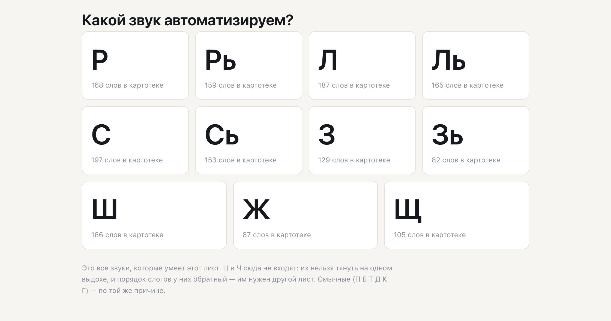

Printable material for sound practice, assembled for one specific child: every word is filtered against the sounds that child cannot say yet — the one thing a printed workbook can never do.

You choose the sound being practised and tick the sounds this child cannot say yet. Everything after that is automatic. The dictionary is cut down to words that hold the target sound and none of the forbidden ones. Ten blocks are then assembled — warm-up, the sound alone, syllables, words, a grammar game, sentences, a tongue-twister — and if they do not fit one A4 page, blocks are dropped in a fixed order until they do. Five kinds of material come out of the same dictionary: the sheet, two tracks to trace, word pairs, and a maze.
Every word is transcribed by sound, not by spelling, because a Russian word can be written with one consonant and spoken with another. If a word cannot be verified, the build stops rather than printing it.
Twice the engine was caught generating Russian by the shape of a word, and twice the rule turned out to be wrong more often than right. Both are now tables, filled in by hand.
| the word | what the rule produced | what goes on the sheet |
|---|---|---|
| стул chair | пять стулов | пять стульев |
| угол corner | два угола | два угла |
| лоб forehead | пять лобов | пять лбов |
Five hundred and seventy-nine words were then inflected by hand, twice and independently. Only forms both passes agreed on were kept.
| the word | the “small” form | what it actually means | printed |
|---|---|---|---|
| ворона crow | воронка | a funnel | no |
| корона crown | коронка | a dental crown | no |
| пила saw | пилочка | a nail file | no |
Four hundred and fifty words went through the same double pass; they agreed on ninety-five per cent. Every disagreement was thrown away rather than resolved — three hundred and six forms survived, two hundred and sixty-nine were blocked.
Newest first. Each entry has the same shape: what it could not do, what it had to know first, and what it can do now.
Both were listed as working features, and neither could be built for almost any sheet: the rule they stood on had been switched off two days earlier as unreliable, and the hand-made table replacing it covered twenty-three words out of one thousand seven hundred. They were counted as existing without existing. Once the tables were filled, one builds on twenty-eight sheets out of twenty-nine and the other on fourteen — and the second number is not a defect, see below.
The affectionate form almost always carries a particular consonant, and that consonant is forbidden on a sheet for any hissing or whistling sound, because a child practising one will slide into the other. Sixteen words on such a sheet; forms exist for twelve; eight of those fall at the purity gate. No engineering moves that number, so the screen should say it plainly instead of reporting that the exercise “could not be assembled”.
The single line that tells a file to execute its tests was sitting in the middle of that file instead of at the end. Everything below it — ten test functions, five of them written by other people, including a check added the day before — was silently skipped, while the suite printed a clean result. Moving one line took the count from 1224 checks to 1649.
Word pairs were built as another block of the sheet. Then the sheet was measured: an A4 page holds 273 millimetres of material, and the existing blocks already asked for 305 to 363. The block became a separate printable material instead. The sheet itself did not change by a millimetre — verified against the previous version rather than assumed.
Sentences on the sheet were frozen phrases: point at a picture, name it. Making them live needs verbs, and a verb cannot be placed without knowing whether its subject is animate and whether the action is finished — neither of which can be derived from how the word ends. The verbs waited while three properties were marked by hand across the dictionary. Then the sentences moved: from “here is a ram” to “an elk is swimming past”.
A practice track for one voiced consonant printed syllables that, read aloud, come out as its voiceless twin — a sheet made to train one sound was training its opposite. Two more materials had the same class of fault. All three came off the paper the day it was measured. What a letter looks like and what a mouth does with it are different facts, and only the second is allowed to decide anything.
The sheet printed a line about sounds that were “still difficult” for this child. Nothing in the input says that: the therapist ticks which sounds to avoid, which is not the same as a diagnosis. The line came off. A generated document may state what it did, never what it inferred about a person.
An assumption was written into a research note, cited from there into a second note, and by the third had acquired the authority of a source — after which it was implemented as though the field required it. The rule now: a confidence mark belongs to the quotation, not to the conclusion drawn from it, however obvious that conclusion looks.
Three times in a row a build was reported as done on the strength of a passing test suite, and three times the printed page was visibly broken: lines not starting where they should, a scrawl instead of a track, a letter running off the edge. Tests pass on the data; paper is a different medium. The screenshot is now taken before the work is handed over.
Navigation rested on the idea that one session equals one step of difficulty. Ten real lesson plans were coded into a dataset of thirty-three task names, and not one worked that way: a therapist moves along a frontier — how far this child has come with this sound — and builds a run-up to it. The idea was dropped; the engine, tested against the same dataset, held.
Machine terms had leaked into the interface, where they meant nothing to anyone but us. Rather than renaming them one by one, a translation layer was added between the engine and the screen. The rule since: a new machine term gets its translation first and is shown second.
The sheet claimed more than the data could support — the source of a block, what a child had mastered, which manual an exercise came from. Provenance is now computed from the data rather than declared, and a claim without a traceable source counts as a defect rather than a rough edge.
A speech therapist described the format she needed, and what went into the code was a summary of her words rather than the words. A week later the two were compared: the format in the code was not hers. Her words now live untouched in their own file, and any reading of them sits beside them, never on top.